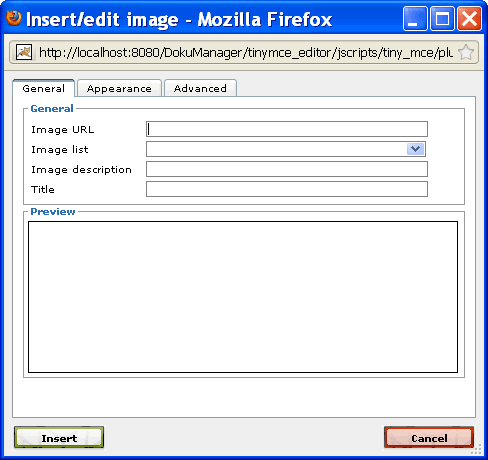
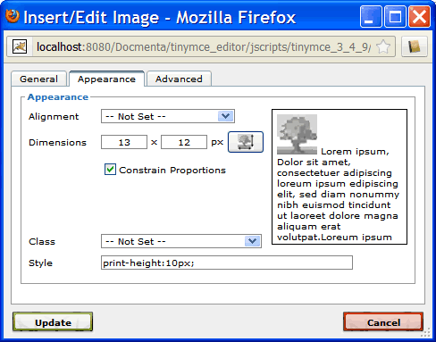

2.3.8.7. Images
Perform following steps to insert an image into the content:
- Place the cursor at the position where the image shall be inserted.
- Click the "Insert/edit image"
 button. This will open the following dialog:
button. This will open the following dialog:

Figure 2.3.67. Insert / edit image dialog
- Enter the image URL or select an image from the Image list.
An image which was uploaded into an image folder, can be referenced with the following image URL:
image/[alias]
where [alias] is the alias name of the image (i.e. the filename without file extension).
- Enter an image description. The image description may be useful for users with disabilities. Furthermore, for interative output formats (e.g. web-based) the image description may be shown as pop-up text when the user moves the mouse over the image.
- Optionally enter an image title. If a title is supplied, then a caption-line is added in front or after the image. The caption-line includes an automatically generated figure number and the image title. Therefore, an image with title should always be placed in a separate paragraph. See Section 2.6.2.1.1, “General output settings” for information on how to configure the caption-line output options.
- Optionally set an alignment value as described below.
- Optionally define the image size as described below
- Optionally set a style-class as described below.
- Optionally enter a unique image ID as described below.
- Click the "Insert" button to close the dialog. The image is then inserted at the current cursor position.
To edit an image, select the image (single click on the image) and click the "Insert/edit image" button.
Defining the image size
By default, the image is displayed with its original width and height (for print-output, the source resolution in dpi can be defined in the output configuration; see Section 2.6.2, “Output configuration”). To change the display size of the image, select the "Appearance" tab and enter the width and height in pixels into the "Dimensions" input-fields.

Figure 2.3.68. Setting the image dimensions
If you want to define a different image size for print-output, you can enter specific print-width and print-height values into the "Style" field. For example, to define a print-height of 10 pixels and a print-width of 80% of the available page-width, enter the value
print-height:10px; print-width:80%;
into the "Style" field.
Setting the image alignment
Select the "Appearance" tab and choose an alignment value from the list.
The alignment value controls, how text that follows the image floats around the image. By default, i.e. if no alignment value is set, the following text just appears after the image, either inline (if the image has no title) or in a new line (if the image is rendered with caption-line).
Usually, this setting is used, to let the text float around the image. This can be achieved by setting the alignment to either "Left" or "Right". If the alignment is set to "Left", then the image is moved to the outer-left and the text that follows floats around the image on the right-side. Respectively, if the alignment is set to "Right", then the image is moved to the outer-right and the text that follows floats around the image on the left-side.
Note:
Currently, the alignment is not supported for print-output (i.e. for PDF output the alignment setting is ignored). This may change in the future, as soon as Apache FOP supports floating elements.
By default, some space is inserted between the image and the text that floats around the image. To change the default spacing for left-aligned images, change the margin-values of the block-style "float_left". Accordingly, to change the default spacing for right-aligned images, change the margin-values of the block-style "float_right". For more information see the description of the pre-defined block-styles "float_left" and "float_right" in Section 2.4.2, “Pre-defined styles”. Note that these styles also define the floating space for left-/right-aligned tables.
Setting a style-class
Select the "Appearance" tab and choose a style-ID from the "Class" list. If a class is selected, then, on publication export, the image is automatically enclosed in a block formatted with the selected style.
Note:
Currently, setting the style-class is not supported for print-output (i.e. for PDF output the style-class is ignored).
For web-based output, the style-class can not only be used to change the formatting of certain images, but it can also be used to control the behavior, e.g. if the user clicks on the image. The chapter Section 1.13.11, “Creating HTML preview images” gives an example of such a usage.
Note:
If the image is not an inline image and no style-class is set, then, on export, the image is automatically enclosed in a block with style-ID "mediaobject". See chapter Section 1.13.11, “Creating HTML preview images”, how this can be used to assign a default behavior when a user clicks on a non-inline image.
Setting an image ID
An image ID has to be set, if it is required to reference the image from within the text. See Section 1.4.2, “Referencing images and tables” for an example on how to create a textual reference to an image.
Select the "Advanced" tab and enter an identifier into the input-field named "ID". The identifier has to be unique within the complete product documentation. Furthermore, it is not allowed to enter an ID that is already used as alias name within the product documentation.
Inline images
If no image title is set and the alignment is not set to "Left" or "Right", then the image is automatically treated as an inline image (i.e. the image appears within the line at the position where it was inserted).